06 / 15
לוגו
מה זה בכלל לוגו, ולמה צריך אותו? מה ההבדל בין לוגו לסמל ובין לוגו למותג, אילו חמישה עקרונות הופכים לוגו לחזק, ואילו חמישה סוגי לוגו יש. ואחר כך: הלוגו לא חי לבד. הוא צריך לעבוד בצבע ובשחור־לבן, על רקע בהיר וכהה, בשלט ענק ובלשונית דפדפן של 16 פיקסלים. ובעולם שבו כל אחד מייצר לוגו בפרומפט, הוא גם צריך לנבוע מחשיבה, לא רק מכלי.
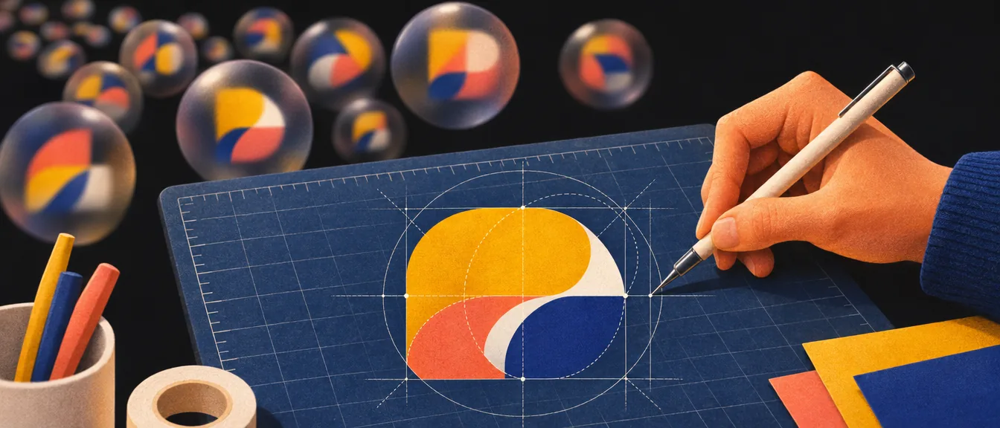
מה זה לוגו?
To logo or not to logo. That is the question.
לוגו הוא אלמנט גרפי, המורכב מאילוסטרציה או מטיפוגרפיה, שנוצר במטרה לסמל ולייצג גורם מסוים: בדרך כלל ארגון או מוצר.
נסו לפני שממשיכים
איזה לוגואים אתם מכירים? רשמו חמישה מהזיכרון. ועכשיו השאלה שהפרק הזה עונה עליה: למה בכלל צריך לוגו?
למה צריך לוגו: הלוגו והמותג
בואו נבין את הקשר של הלוגו למותג שהוא מייצג. התרגיל הבא לקוח מההרצאה שלי: בוחרים מותג, חושבים על הלוגו שלו, ושואלים „מה הלוגו הזה אומר לכם?”
המילים הן התשובות של סטודנטים בהרצאה שלי.
על מה אין לנו שליטה, ועל מה יש
חשוב להבין: לא כל הערכים שהצרכנים משייכים למותג מגיעים מהלוגו. אנשים יצרו את החיבור הרגשי שלהם למותג דרך השימוש במוצר, וימציאו לעצמם פירושים למה המותג אומר ומסמל. לטוב ולרע, אין לנו שליטה על זה.
אין שליטה
המוצר והשירות
אם מעצב יקבל מיליון דולר לעצב לוגו, והוא יעשה עבודה נפלאה, אבל המוצר עצמו תקול והשירות של החברה לוקה בחסר… לא יעזור כמה המסר של הלוגו יהיה חיובי, אם המוצר נתפס באור שלילי בעיני הצרכנים.
יש שליטה
קמפיינים ותרבות
ערכים שיגיעו מקמפיינים: פרסומות, מודעות, מהלכי פרסום ועוד. וטכניקה נוספת: הטמעה של המותג בתרבות, כמו קליפים של שירים, שימוש בסרטים, פרזנטורים ועוד.
המעצב
הרושם הראשוני
למעצב יש שליטה על הרושם הראשוני של המותג. כשאתם מעצבים לוגו, אתם בעצם מציגים מסר בצורה ויזואלית. מסר אחד!


המטרה של הלוגו
לוגו הוא ייצוג חזותי של חברה, ארגון או מותג. הוא יוצר הכרה ומסייע לאנשים לזכור את החוויות שלהם ואת הקשר עם המותג. השאיפה האידיאלית: לעורר השראה ונאמנות (וכמובן, זה לוקח זמן).
הלוגו הוא לא המותג
לוגו הוא לא מותג, אבל הוא חלק מהמותג: חלק אחד מזהות המותג של החברה. המותג כולו מייצג יותר: את מטרת החברה, את ההיסטוריה שלה ואת התפיסה שלה בעיני האנשים.
יחד עם הלוגו, המותג כולל בין השאר:
- ספר מותג
- סוגי הגופנים של החברה
- צבעי החברה
- שילוט בבניינים
- מדי הצוות
- סוג התמונות
- כללים לתמונות ולשימוש בלוגו
- אופי המותג
- כל הזהות הפרסומית
המרכיבים של שפה עיצובית זהות מול תדמית
הלוגו הוא לא המותג, אבל הוא החלק המזוהה ביותר של המותג.
מה ההבדל בין סמל לבין לוגו?
זה דיון, אז תשתתפו
לפני שאתם קוראים הלאה: איך הייתם מסבירים את ההבדל במשפט אחד?
סמל
מסר אחד
לא ניתן לפרש. יש לו מסר אחד, ברור ואוניברסלי.
לוגו
הרבה פירושים
יכול לשדר מסרים שונים. המתבונן יכול לפרש אותו בדרכים שונות, ואף ליצור כלפיו קשר רגשי.
איזה סמלים אתם מכירים?
תזכרו: לסמל יש מסר אחד בלבד, ברור ואוניברסלי. נורות האזהרה ברכב, למשל, צריכות להיות מובנות לכל נהג, בכל מדינה, בלי מילה אחת.


מהו הסמל העתיק ביותר שאתם מכירים?
העשרה
„הקוניפורם” (כתב היתדות) ידוע בתור הכתב העתיק בעולם: מערכת של אותיות שפיתחו השומרים העתיקים ב־3500–3000 לפני הספירה. המערכת נחשבת למשמעותית ביותר מבין ההמצאות שלהם. ארץ שומר השתרעה על רוב האזור שבדרום מסופוטמיה, בדרום עיראק של היום.
ובמצרים: ההירוגליפים, כתב החרטומים.


מסקנה
מותר לשלב „סמלים” (איקונים מוסכמים ומוכרים) בלוגו, אבל צריך לקחת בחשבון את האסוציאציות שנובעות מהם. זה יהיה תלוי בלקוח, בקהל היעד, במדינה, בשפה, בתחום וכו’. אתם לא יכולים להתעלם מזה. צורות עם מוסכמה תרבותית אותו צבע, תרבות אחרת
שלושת התפקידים של הלוגו
לכל לוגו יש שלושה תפקידים עיקריים: זיהוי, הבחנה ותקשורת.
01
זיהוי
הלוגו הוא סימן הזיהוי של המותג בשוק. ביכולתו לייצג את המותג אל מול העולם, באופן ויזואלי וסימבולי. הלוגו הוא הדבר הראשון שהלקוח רואה, ולכן הוא חייב להשאיר רושם חיובי. אין שני לרושם ראשוני!
02
הבחנה
בידול, ייחוד. לוגו יעיל צריך להיות ייחודי. ככל שהלוגו מיוחד ומקורי יותר, הוא יבלוט לעומת המתחרים וייצור בידול מהם. מקורי
03
תקשורת
לוגו מספר על המותג. המסר עשוי להיות ישיר או עדין, אבל חשוב שהצופה יקלוט מסר חיובי: מתוחכם, לא פורמלי, מוצק, אמין, אכפתי, מקצועי, יצירתי וכו’. מצד שני, לוגו לא מדויק יכול להעביר מסר הפוך ולהזיק: לא מקצועי, גימיקי ומיושן.
לוגו בעידן ה־AI
בעידן שבו AI מייצר לוגו בשנייה, המעצב האנושי נהיה קריטי יותר.
בינה מלאכותית יכולה לייצר 1,000 סמלי לוגו בדקה. זה לא מאיים על מעצבים טובים. זה פשוט חושף מי באמת מעצב ומי רק מייצר גרפיקה. עולם עיצוב הלוגו עובר שינוי עמוק, והכלים החדשים לא מחליפים חשיבה: הם מבליטים את הפער בין סמל שנראה נחמד לבין זהות מותג שנבנית מתוך אסטרטגיה, הבנה ודיוק.
logo, tech startup, modern
4
פרומפט אחד, שלוש מילים באנגלית, וכבר יש כמה סמלים שנראים מקצועיים לגמרי.
ועוד, ועוד. אלף בדקה. כולם עם אותם גרדיאנטים, אותם חיצים ואותן מערבולות. כשיש כל כך הרבה, אף אחד מהם לא נזכר.
מה שמבדיל הוא לא הליטוש אלא הכוונה: סקיצה אחת שמישהו חשב עליה, עם קווי בנייה וסיבה לכל קו. את זה המעצב מביא, ואת זה הכלי לא מייצר.

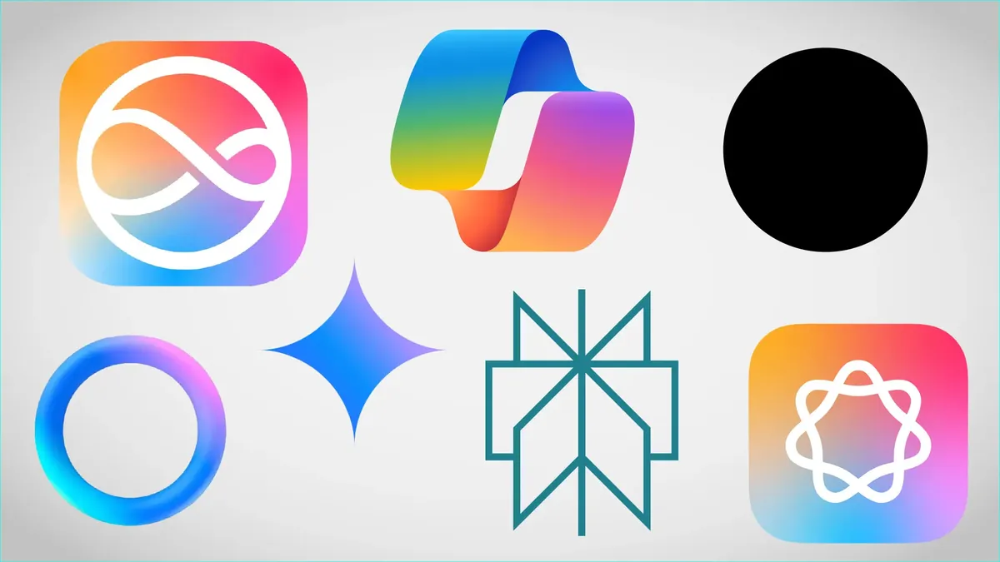
הכללים הקלאסיים עדיין חיים, אבל צריכים שדרוג
היסודות של עיצוב לוגו טוב לא נעלמו. פשטות, ורסטיליות וזכירות עדיין קריטיים. אבל ההגדרות שלהם התרחבו. מה שנחשב „ורסטילי” ב־2016 לא מספיק בעולם של היום, הנשלט על ידי מסכים, תנועה וממשקים דיגיטליים. בואו נבחן את העקרונות המוכרים ונראה איך מתאימים אותם למציאות הנוכחית. פשטות ורסטיליות זכירות
ואיך הסיפור הזה נגמר, עם הגרף של „הכלים השתנו, אבל המקצוע לא מת”: בסוף הפרק הבא, כמו בסוף ההרצאה. הרף פשוט עלה
מה זה לוגו טוב? חמישה עקרונות שיוצרים לוגו חזק
חמשת העקרונות האלה הם עמוד השדרה של הפרק. כל אחד מהם נבנה על הקודם, ובסוף הם מתחברים לרשימת בדיקה אחת.
שלושה מהם (נקי וזכיר, מותאם לכל פלטפורמה, משדר ערכים ומתחבר לקהל) מסוכמים יפה בסרטון קצר ששמרתי: 3 עקרונות טובים לעיצוב לוגו (יוטיוב). עוד ערוצים טובים יש בפרק ההשראה. ערוצי יוטיוב
1. פשטות: לא מינימליזם נטול נשמה, אלא זיקוק של מהות
BEFORE
בעבר
פשטות הייתה שם נרדף לצמצום צורני, לעיתים על חשבון האופי.
2026
היום
פשטות אמיתית היא היכולת להסיר את הרעש תוך שמירה על נשמת המותג. זהו איזון עדין בין בהירות לרגש.

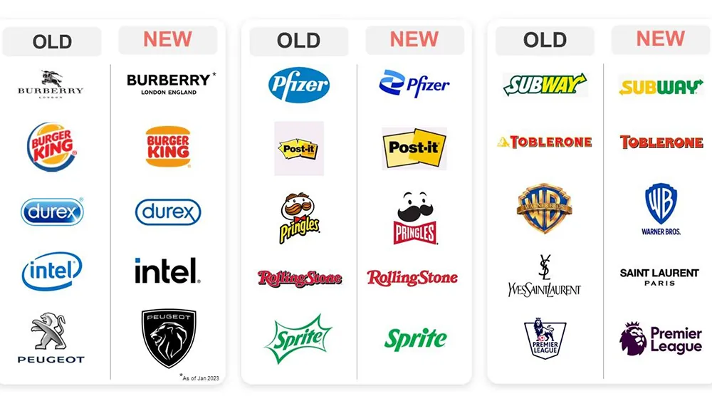
דוגמה: הלוגו של Iron Grip (חדר כושר) הוא פשוט, אבל עדיין ניתן להרגיש את המשקל, השליטה, התנועה והפסיכולוגיה שמאחוריו. זו הפשטות שאליה אנחנו שואפים.
בעבר
צמצום צורני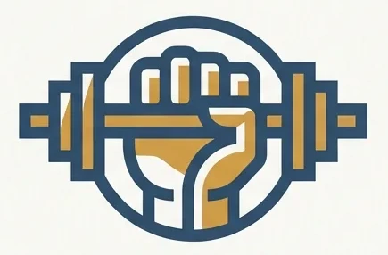
היום
זיקוק של מהותבעבר: עיגול, שלושה פסים, משושה. נקי ומסודר, אבל אפשר להדביק את זה לכל עסק בעולם. אין כאן אף אחד.
היום: הסמל של Iron Grip, בנוי מכמה צורות גיאומטריות בלבד. ובכל זאת רואים אגרוף שנסגר סביב מוט: משקל, אחיזה ושליטה. פשוט, ועדיין יש לו נשמה.
דוגמה מהשנים האחרונות: מותג הוולנס Mindbody חשף זהות חדשה, שעושה קפיצה משמעותית מהעיצוב הישן, עם רענון צבעים מתבקש ואייקון לוגו חדש לגמרי. סמל ה־m הדינמי והזורם מייצג תנועה, נשימה ודופק, ומשקף את המשימה של המותג ואת הקצב של קהילת הוולנס שלו. זהות מודרנית, ברורה ועל־זמנית, שמביטה קדימה בלי לנתק את הקשר למורשת.


כשפשטות הולכת לאיבוד: הפיל של Animal Planet
Animal Planet, רשת הטלוויזיה שהביאה לנו את The Crocodile Hunter, סרטי טבע רגועים ו־River Monsters, החזיקה בעבר לוגו שהיה הגיוני לגמרי.


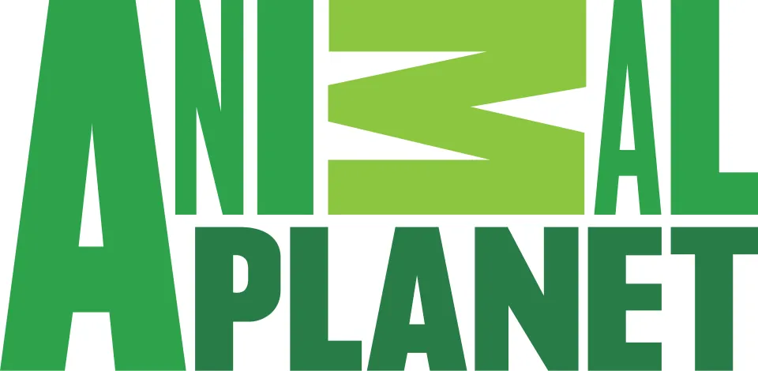
2008האות M נופלת
הפיל האהוב נעלם, ובמקומו הופיע לוגו טקסטואלי מגושם, עם האות M שמוטה הצידה כאילו היא באמצע נפילה. בחירה אמיצה, שמטרתה הייתה מודרניזציה של המותג ופנייה לקהל רחב ובוגר יותר, בדומה למהלך שעשתה Tropicana, ובהתאם לתכנים החדים יותר שהרשת התחילה לשדר.
בפועל, זה לא עבד.
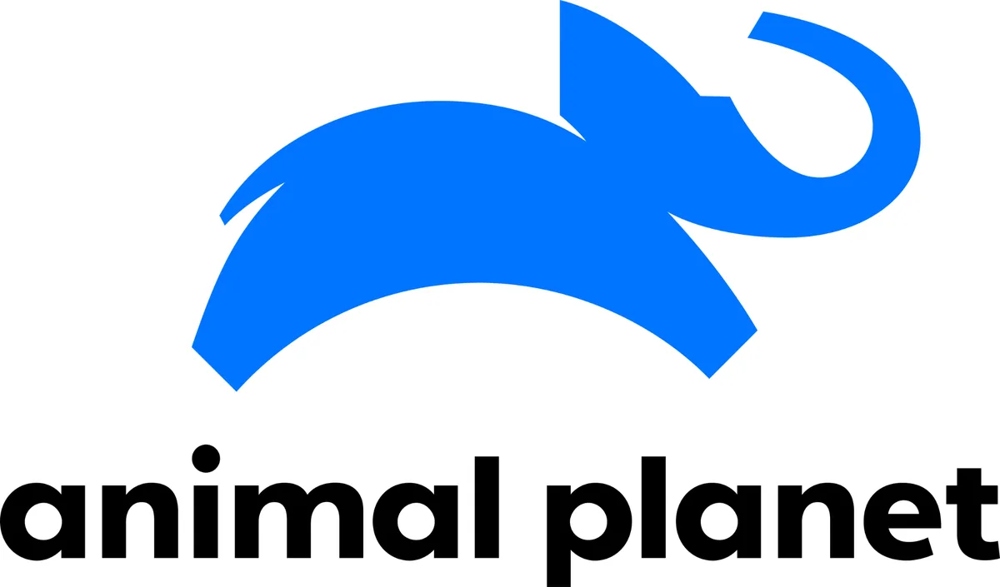
2018הפיל חוזר
הקהל היה מבולבל, מעצבים סלדו מהשינוי, ואפילו הפילים נפגעו (הערת עורך: דרוש מקור). הרשת דבקה בכיוון, ולמזל כולם, כעבור עשר שנים הוצג לוגו מחודש ומעודן, כשהפיל חוזר למקומו הטבעי. וכך, הסדר חזר לכוכב החיות.
עוד שני סיפורים כאלה, של Gap ו־Tropicana, יש בסוף הפרק. כשמשנים לוגו בלי סיבה טובה
פשוט וברור
לוגו טוב לא צריך הסבר. יש דוגמאות של לוגואים מוצלחים ששוברים את החוקים, אבל באופן כללי לוגו טוב צריך להיות פשוט, ובנוי מהמרכיבים החיוניים ביותר בלבד, כך שאפשר לזכור אותו אחרי מבט אחד.
התבוננו
התבוננו בלוגואים הבאים: לוגואים שאנחנו רואים כל יום ומזהים באופן מיידי. פשוטים, נכון? לא קל להיות כל כך פשוט.

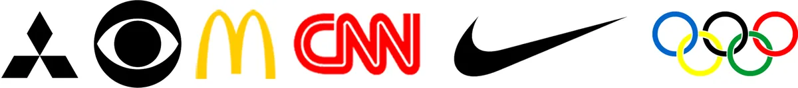
פול רנד (Paul Rand) תכנן חלק מהלוגואים המפורסמים והוותיקים ביותר בעולם, ביניהם IBM, ABC, UPS ו־Westinghouse. שווה לחפש את העבודות שלו ולראות כמה מעט צורות כל אחד מהם צריך.


העיצוב כל כך פשוט, ולכן כל כך מסובך. כדי שהלוגו יהיה נוח לזיהוי מיידי, מה שאנחנו משאירים בחוץ חשוב לא פחות ממה שאנחנו משאירים בפנים.
פשטות, סיכום
התיקונים שהעין עושה, ולא התוכנה
מה שמדויק מתמטית לא תמיד נראה מדויק. עיגול וריבוע באותו גובה בדיוק? העיגול ייראה קטן יותר, כי הוא לא ממלא את הפינות. לכן מעצבים נותנים לצורות מעוגלות ומחודדות לחרוג מעט מקו הבסיס ומקו הגובה (Overshoot). אותו דבר באותיות: ריווח שווה בין כל האותיות נראה לא שווה, כי אותיות כמו A, V, W, T כולאות הרבה חלל לבן, ולכן מקרבים אותן ידנית (Kerning).
ועוד תיקון אחד שחשוב לגרסה הנגטיבית: לבן על רקע כהה נראה עבה יותר מאותה צורה בשחור על לבן, כי האור „זולג” החוצה. בלוגו עם קווים עבים כדאי להרזות מעט את הגרסה הנגטיבית כדי שתיראה כמו המקור. גרסאות חובה
2. החמיאו לשם החברה
לוגו טוב צריך להחמיא לשם החברה. משמעות הדבר היא לבחון אסוציאציות, לחקור את ההיסטוריה ואת הסמליות של שם החברה, ולהשתמש בדימויים שמתאימים לתחום העיסוק.
איך עושים את זה בפועל: שואלים את הלקוח למה בחר בשם, ומפרקים את השם למפת אסוציאציות. שם החברה: שאלות ללקוח מפות חשיבה שם וסלוגן
3. נראה טוב בשחור ולבן
לוגו טוב צריך להיראות טוב בשחור־לבן בדיוק כמו בצבע. זה אולי פחות חשוב מפעם, כי קיימים לוגואים שנועדו רק למסך. אבל כשהלוגו נראה טוב בשחור־לבן, תוספת הצבע תחזק את הניגודיות ותדגיש את הצורה או הרעיון, ולא תצטרך להציל אותו.
זה גם מבחן החובה הראשון, וגם אחת משלוש גרסאות החובה של כל לוגו. עמידות ללא צבע גרסת שחור־לבן
4. ניתן להרחבה
לוגו טוב צריך להיות מדרגי: לעבוד במספר גדלים שונים. כרטיסי ביקור, אתרי אינטרנט, חולצות טריקו, חוברות, באנרים, אפליקציה (אייקון), כלי רכב, שלטי חוצות וכו’.
תרגיל
ערכו רשימה של השימושים השונים בלוגו. שקלו איך כל שימוש עשוי להשפיע על הקריאות של הלוגו, ובזמן העיצוב התחשבו במגבלות שמצאתם.


ורסטיליות וסקיילביליות: מעבר למבחן החולצה
פעם היה מספיק שהלוגו „עובר את מבחן הטי־שירט”. היום הרף גבוה יותר:
Scalability
סקיילביליות
הלוגו חייב לשרוד בגודל 16 פיקסלים כ־favicon, ובו בזמן להיראות מרשים על מסך ענק באצטדיון. זה אומר לתכנן מערכת של סמלים: לוגו מלא, סמל, סמל מפושט, ואולי אפילו מיקרו־סמל למקומות הזעירים ביותר.
Versatility
ורסטיליות
הלוגו צריך לעבוד בתנועה, במצב חשוך (Dark Mode), כחלק מרכיבי ממשק משתמש (UI) ועל מוצרים פיזיים. הוא צריך להיראות חד כשהוא מונפש בעדינות במסך פתיחה של אפליקציה, כאווטאר זעיר בפינת אתר, וגם כהטבעה. דמיינו מגן כמו של GRRi עושה בדיוק את זה.


לוגו מלא
מגן עם אות
אות לבד
מסך באצטדיון: עשרות מטרים, ורואים אותו מרחוק. כאן נכנס הלוגו המלא, עם המגן ועם השם.
מסך מחשב: הכותרת של האתר. עדיין יש מקום לשם ליד הסמל, אבל הכול כבר קטן בהרבה.
אייקון אפליקציה: ריבוע קטן במסך הבית. השם נופל, ונשאר המגן עם האות.
הטבעה: על כריכת עור אין צבע בכלל, רק בליטה ושקע. אם הצורה חזקה, מזהים אותה גם ככה.
לשונית בדפדפן: 16×16 פיקסלים. גם המגן כבר עמוס מדי, ונשארת האות לבד, עבה ופשוטה.
ולפני שהלוגו יוצא לעולם, שלושה מבחני חובה: צבע, גלילה וזכירות צורנית. הם מפורטים, עם הדגמה, בהמשך הפרק. מבחני חובה
התאמות לכל גודל ורזולוציה

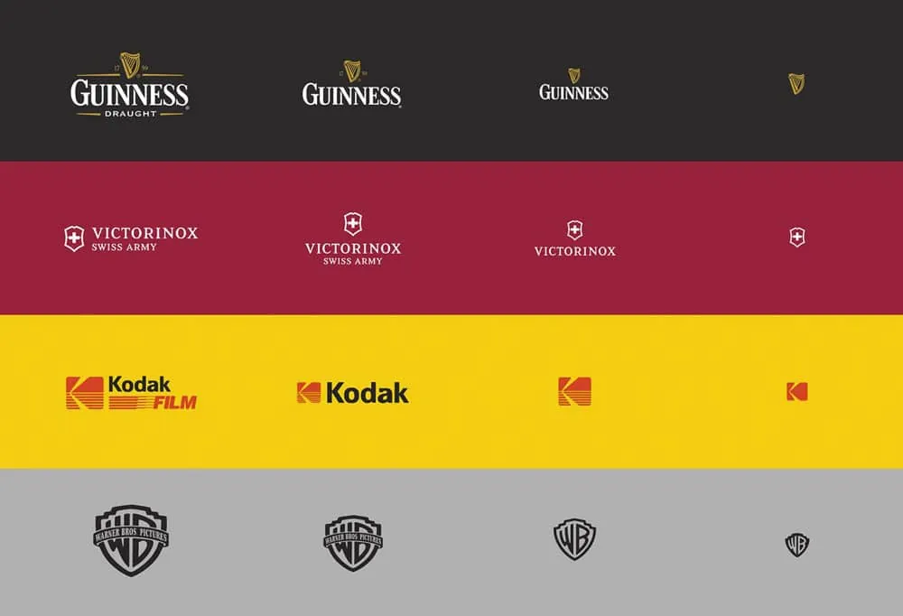

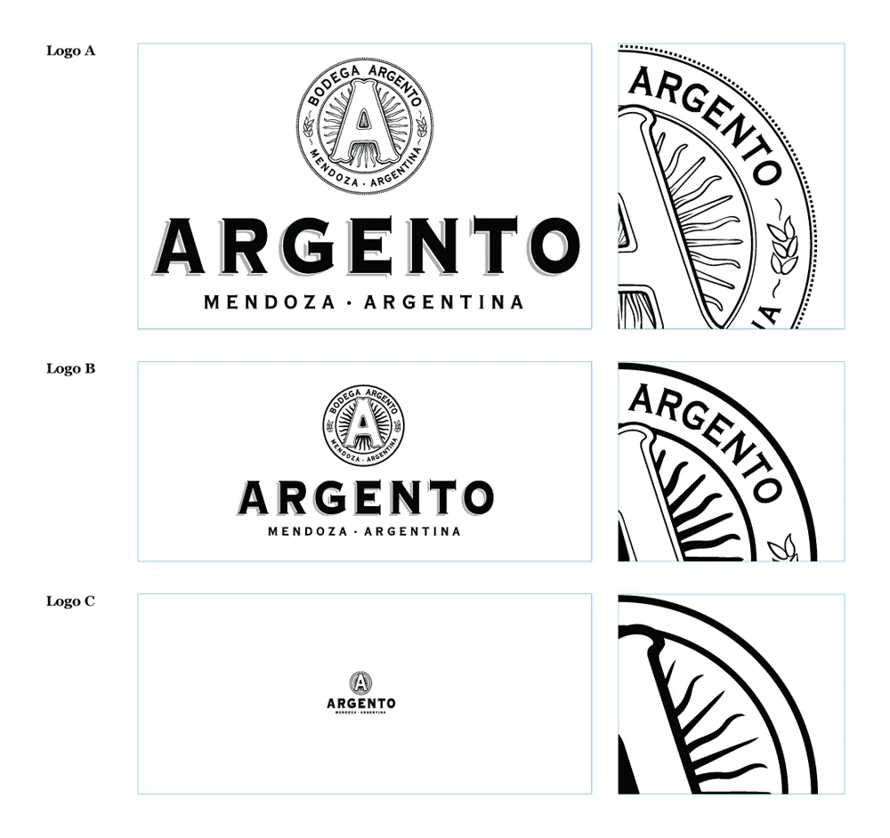
איך מתכננים את הגרסאות האלה מראש, ומה מוסרים ללקוח: מערכת לוגו לוגו רספונסיבי
5. מקורי
לוגו טוב חייב להיות מקורי. עם כל כך הרבה לוגואים בעולם, צריך להיות ערניים לשוק ולבדוק שלא עיצבנו משהו שכבר נראה בעבר, או מזכיר משהו כזה. תמיד תעשו מחקר: מי המתחרים של העסק? מה עשו בעבר בתחום? מי המתחרים
חיפוש לפי תמונה, אבל רק בסוף
היום אפשר להעלות את הלוגו שלכם כתמונה לגוגל ולחפש לפי התמונה. תקבלו תוצאות דומות, ותוכלו לבדוק אם כבר עשו את זה לפניכם.
מומלץ לבדוק כפילויות בסיום העבודה, כדי לא לחסום את היצירתיות. באופן טבעי, כשאנחנו בוחנים הרבה עיצובים, מתחילים להיווצר אצלנו מחסומים ליצירת עיצוב מקורי.
שימו לב: זו בדיקה של דמיון ללוגואים קיימים, בסוף העבודה. מחקר המתחרים הוא שלב אחר, ועושים אותו לפני שמתחילים לעצב. מחקר מתחרים למה לחפש רק אחרי
ובעידן של מחוללי לוגואים, מקוריות היא כבר לא רק „לא להעתיק”. היא השאלה מה אתם מביאים שהכלי לא יכול.
האמת הלא נוחה: הלקוחות שלכם כבר מכירים את Midjourney וחבריו
בואו נדבר ישירות על AI. רוב הלקוחות שלכם יודעים שהם יכולים לייצר לוגואים בעצמם. אם ההצעה היחידה שלכם היא „אני אעצב לך סמל שנראה מגניב”, אתם מתחרים ישירות בפרומפט של 20 שניות. זה קרב שאתם לא רוצים, ולא יכולים, לנצח בו.
logo for a tech company, modern, blue
Your edge is thinking, not just using tools.היתרון שלכם הוא החשיבה, לא רק השימוש בכלים.
כך הלקוח מתחיל: פרומפט אחד, בלי בריף, בלי מחקר ובלי לדעת מי הקהל.
עשרים שניות אחר כך יש ארבעה סמלים נקיים. כולם „נראים כמו לוגו”, ואף אחד מהם לא יודע למי הוא מיועד או ממה הוא צריך להבדיל.
כאן נגמרת התחרות על הציור ומתחילה התחרות על החשיבה. בה אתם מנצחים.

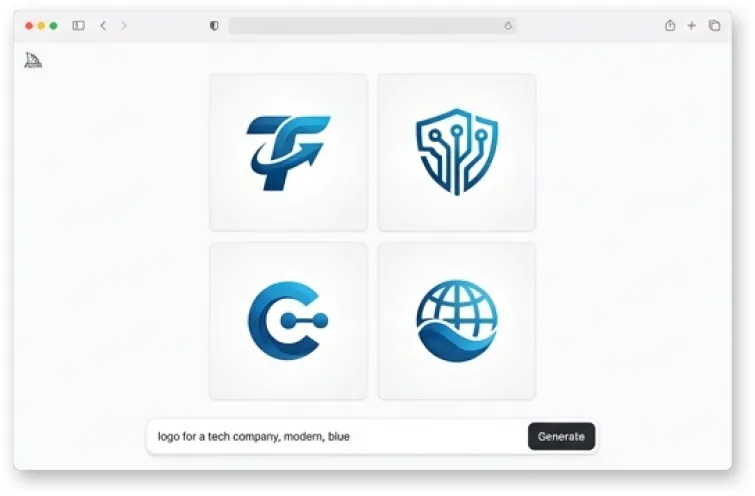
נקודות התורפה של AI הן החוזקות שלכם
פסיכולוגיה
היא לא מבינה את הניואנסים התרבותיים והרגשיים של קהל המטרה.
אסטרטגיה
היא לא מבינה את ההקשר העסקי או את קהל היעד הספציפי.
התאמה לשוק
היא לא מבינה איך הלוגו ישתלב בסביבה תחרותית רוויה.
איפוק
היא תוסיף ותקשט עד שנשמת הרעיון תיעלם.
אתם יודעים מתי להגיד „לא, זה יותר מדי”. אתם מבינים שלוגו בצורת מגן לא מתאים למותג צעצועים, או שסמל אגרסיבי מדי יבריח לקוחות של יועץ פיננסי. זה הערך שלכם.
ומה עושים עם זה? משתמשים ב־AI כסקצ'בוק, לא כמחליף: האסטרטגיה מגיעה מכם, חומר הגלם מהמכונה, והזיקוק שוב מכם. מודל העבודה המלא, עם הדגמה ומה אומרים ללקוח, נמצא בפרק הבא. AI כסקצ'בוק
ולבסוף, ושוב: לוגו טוב חייב להיות מקורי.
סיכום: מה זה לוגו טוב?
תחשבו על הרשימה הזו כמו Check List. עברו עליה עם הלוגו שלכם, וסמנו רק מה שבאמת עובר:
חמשת סוגי הלוגו
לפני שמתחילים לשרטט, כדאי לדעת מה האפשרויות. ישנם חמישה סוגים של לוגואים, וכל סוג פותר בעיה אחרת:
LOGO symbol with name
1. לוגו סמל עם שם

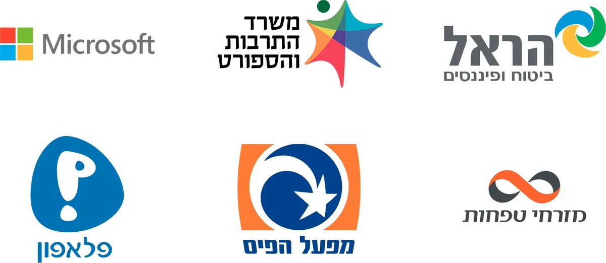
לוגו שקיים בעיקר בצורת סמל, והטיפוגרפיה היא רק ליווי ולא העיקר. אפשר להשתמש בסמל כמו באייקון, במקרים שאין מקום לטיפוגרפיה.
LOGOTYPE
2. לוגו טיפוגרפי (לוגו מילה, Wordmark)

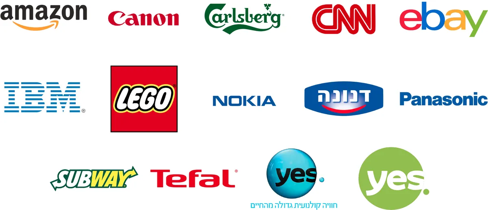
לוגו שמורכב מאותיות השם של המותג, החברה או המוצר. לוגו שאי אפשר „לפרק” לצורה אחת פשוטה.

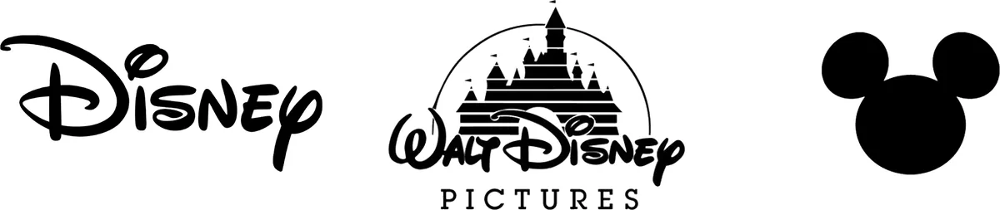
לפעמים ללוגו טיפוגרפי יש עוד כמה אפשרויות, ואפילו עיצוב של אייקון בלבד! כמו Disney.
LOGOTYPE & Symbol
3. לוגו טיפוגרפי וסמל

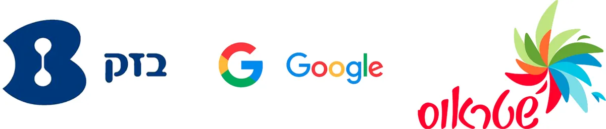
לוגו טיפוגרפי עם סמל. בדרך כלל הסמל נועד לשמש כתחליף, כשאין מקום ללוגו הטיפוגרפי.

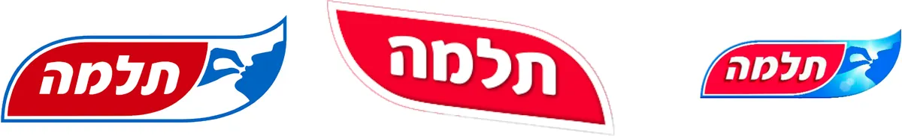
לפעמים ללוגו יהיו כמה גרסאות לשימושים שונים, בעיקר למדיה שונה: דפוס, אינטרנט וטלוויזיה.

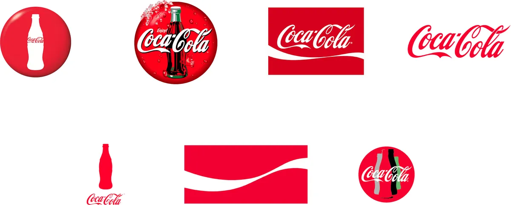
דוגמה לחברה שיודעת לעשות את זה כמו שצריך: Coca-Cola.

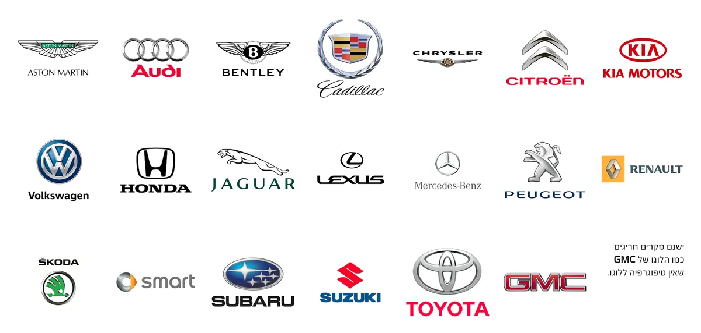
בסמלים של יצרני רכב, בדרך כלל משתדלים שיהיה סמל וגם טיפוגרפיה ייחודית ש„מחמיאה” לסמל, מחזקת אותו ולעיתים ממשיכה אותו.
LOGO SYSTEM · Dynamic Logo
4. לוגו מערכתי / לוגו דינמי

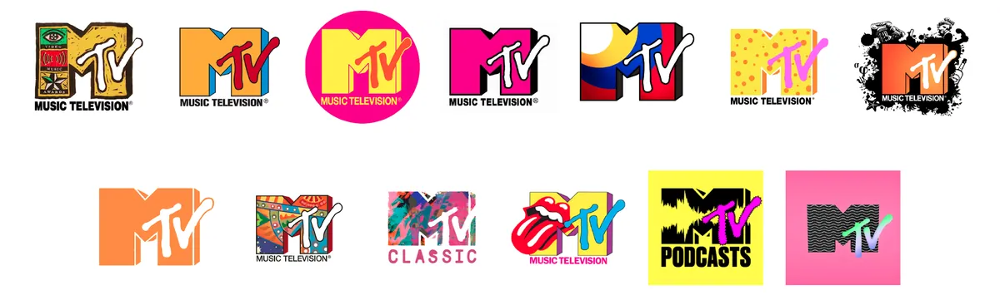
ערוץ MTV היה בין החלוצים שהשתמשו ב־Logo System, שידוע גם בתור Dynamic Logo.

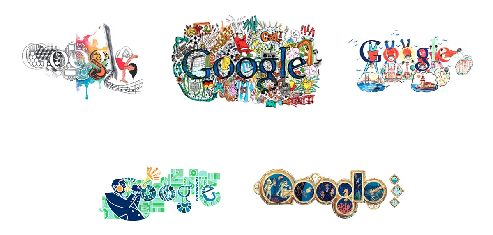
ממשיכי הדרך: Google, שהמציאו את ה־Google Doodle. לא משנה כמה העיצוב היה משוגע או מקושקש, תמיד אפשר היה לזהות את הלוגו.

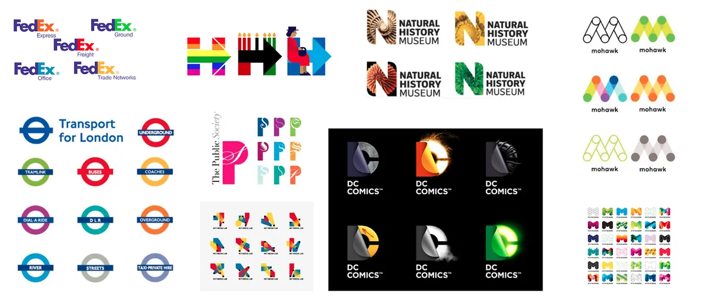
חברה, מותג, עסק או מוצר שרוצים להראות חדשנות והסתגלות ישתמשו במערכת הזו. עוד דוגמאות בשפע תמצאו אם תחפשו את המונחים dynamic identity ו־generative logos.
Brand Character
5. לוגו דמות

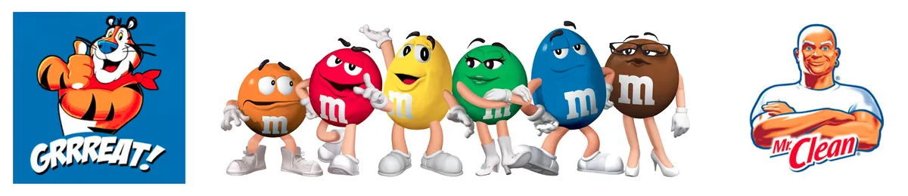

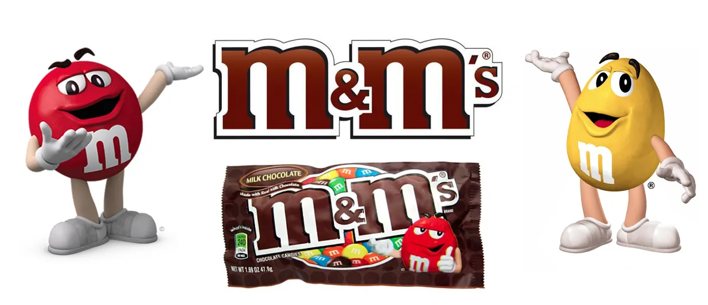
שילוב של דמות בלוגו הוא חזק מאוד, אבל מחייב את המעצב לחדש ולהשתמש בדמות, כי היא הפנים של החברה, של המוצר או של המותג. מערכת הדמות
כל הדוגמאות מהשקפים של ההרצאה. לחיצה על תמונה פותחת אותה בגדול.
ומה עם החלוקות האחרות?
במקורות אחרים תמצאו חלוקה עדינה יותר, אבל כולה נכנסת בחמשת הסוגים שלמעלה: לוגו ראשי תיבות (Lettermark) ( כמו IBM או HBO) הוא לוגו טיפוגרפי. אמבלם (הטקסט בתוך תג או חותם, כמו Harley-Davidson) הוא לוגו טיפוגרפי וסמל שאי אפשר להפריד. ואת הסמלים נהוג לחלק לתמונתי (ציור של דבר מוכר, כמו התפוח של Apple) ולמופשט (צורה בלי משמעות מילולית, כמו של Nike).
צבעים ללוגו: גרסאות חובה
הלוגו הוא הפנים של המותג, ולכן עליו להיות גמיש ומוכן למגוון שימושים: מדפוס ועד דיגיטל, מרקע בהיר ועד כהה. המטרה היא לשמור על נראות ברורה ועקבית בכל מצב.
גרסאות חובה לכל לוגו
- גרסה צבעונית מלאה: הגרסה הראשית של הלוגו, הכוללת את צבעי המותג כפי שהוגדרו בפלטה הרשמית. זו הגרסה שתשמש ברוב המקרים: באתר, בפרסום ובמדיה הדיגיטלית.
- גרסה שחור־לבן (Monochrome): נדרשת לשימושים שבהם לא ניתן להדפיס או להציג צבע (כמו פקסים, הטבעה, חותמות, חריטות וכו’). גרסה זו גם בודקת את החוזק הצורני של הלוגו: אם הוא עובד טוב בשחור־לבן, סימן שהוא מעוצב נכון.
- גרסה נגטיבית (Reverse / Negative): גרסה שבה הלוגו מוצג בלבן על רקע כהה, או להפך. מיועדת למקומות שבהם יש רקע צבעוני או עמוס, כדי לשמור על ניגודיות וקריאות.


כללים לשימוש נכון
- הגדירו מתי להשתמש בכל גרסה. לדוגמה: צבעונית למדיה דיגיטלית, שחור־לבן למסמכים, נגטיבית לרקעים כהים.
- במקרים שבהם הרקע „נאבק” בלוגו, ניתן להשתמש ב־Strip / פלאח צבעוני, לבן או שחור מאחוריו כדי להחזיר ניגודיות וקריאות.
- הימנעו מהנחת הלוגו על תמונות עמוסות או רקעים מתחלפים. זה פוגע בזיהוי ובאחידות המותג.
- ודאו שלוגו בצבע שקוף (PNG או SVG) נבחן גם על רקעים שונים לפני מסירה ללקוח.
ואם המותג פועל גם בדפוס וגם בדיגיטל, מגדירים ערכי צבע מדויקים לכל מערכת: HEX / RGB למסכים, CMYK לדפוס, ו־Pantone לצבע מותג ייחודי. קוד צבע לכל מערכת
מרווח מגן (Clear Space)
כל לוגו זקוק לשטח נשימה מסביבו: אזור נקי וחופשי מאלמנטים אחרים, כדי לשמור על נראות, קריאות והשפעה ויזואלית. האזור הזה נקרא Clear Space או מרווח מגן, והוא מגן על הלוגו מהצפה ויזואלית של טקסטים, תמונות או סמלים סמוכים.
איך מגדירים את הריווח?
בדרך כלל משתמשים באלמנט מתוך הלוגו עצמו (למשל גובה האות הראשונה, או חלק מצורת הסמל) כיחידת מידה לחישוב הריווח. לדוגמה: אם גובה האות „A” בלוגו הוא היחידה הבסיסית, אז כל צד של הלוגו יקבל ריווח שווה לגובה האות הזו (X = A height).
מודדים: הגובה של האות u בלוגו הופך ליחידה X. בינתיים הטקסטים והסמלים מסביב צפופים עליו.
משכפלים את X לכל אחד מארבעת הצדדים.
המסגרת שנוצרת היא מרווח המגן. כל מה שניסה להתקרב נדחף החוצה.
מטרת הריווח
- לשמור על איזון ויזואלי בכל קנה מידה, גדול או קטן.
- למנוע מצב שבו אלמנטים אחרים „מתנגשים” עם הלוגו.
- להבטיח שהלוגו יעמוד בפני עצמו ויישאר ברור גם כשהוא משולב בעיצוב מורכב.
גם המותגים הגדולים עובדים כך. גוגל, למשל, מגדירה את המרווח המינימלי סביב הלוגו שלה לפי גובה האות G.


טיפ
ניתן להגדיר גם גודל מינימלי ללוגו: גובה או רוחב שבו הוא עדיין קריא וברור. מתחת לגודל הזה עדיף להשתמש בגרסה פשוטה יותר של הלוגו (ללא טקסט או פרטים קטנים). לוגו רספונסיבי
עשה ואל תעשה עם הלוגו
אם אתם מכינים ספר מותג ללקוח אמיתי (ולא לתיק עבודות בלבד), מומלץ להוסיף עמוד שמסביר בצורה ברורה את כללי „עשה ואל תעשה” עם הלוגו. מטרת העמוד היא להבטיח שכל מי שיעבוד עם המותג בעתיד, מעצבים, ספקים, בתי דפוס או משרדי פרסום, ישמור על שימוש נכון ואחיד בלוגו.
בעמוד זה ניתן להציג דוגמאות ויזואליות קצרות עם הסברים קצרים מתחת, כמו:
- לא למתוח או לשנות פרופורציות
- לא לשים על רקע עמוס
- לא לסובב
- לא להחליף צבעים מהפלטה הרשמית
- לא לשים את הלוגו קטן מדי או קרוב מדי לקצוות
עמוד כזה לא רק שומר על שלמות המותג, אלא גם מראה על רמת מקצועיות גבוהה ומחשבה לטווח ארוך. ספר מותג

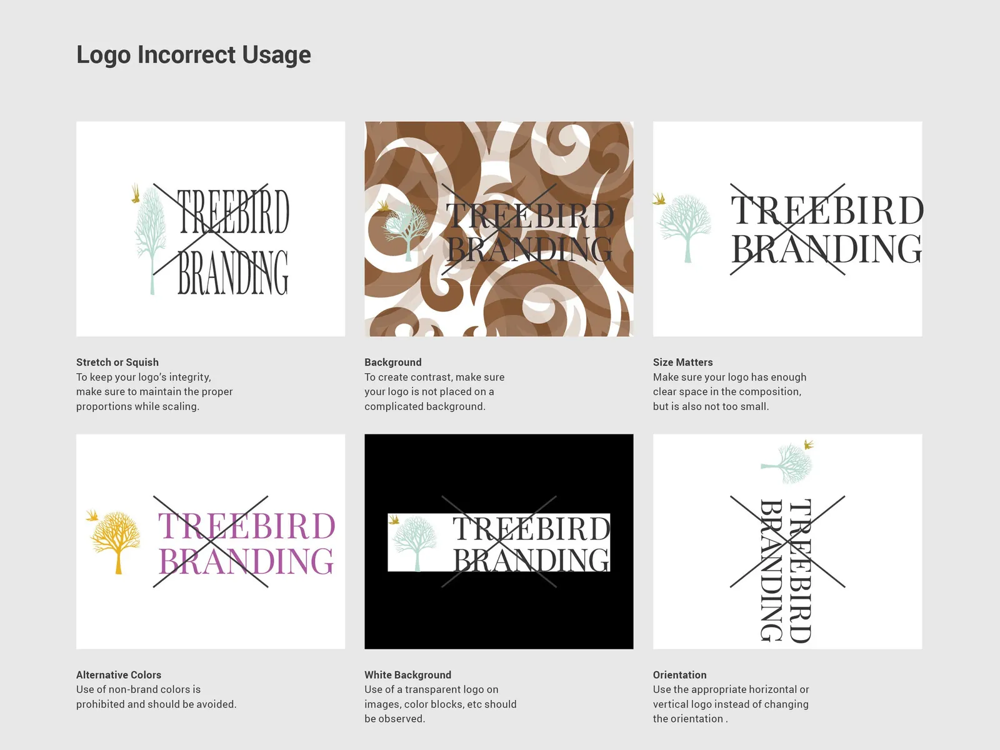
אל תמתחו לוגו או טיפוגרפיה
אסור לעוות לוגו או פונט על־ידי מתיחה, דחיסה או שינוי פרופורציות. זה פוגע ביחסים הגרפיים, באיזון הצורני ובקריאות, ובעצם הורס את השפה שהמעצב המקורי תכנן.
אם יש צורך להתאים את הגודל או היחס, עדיף לשנות את קנה המידה באופן פרופורציונלי בלבד (Shift + Drag), ולא לבצע מתיחה חופשית.
מתיחה חופשית: הלוגו מתעוות
✓ Shift + Drag: אותו לוגו, רק גדול יותר
טיפ
מתיחה קלה של עד 3–5% לרוב לא תורגש, אבל כל שינוי מעבר לכך כבר פוגע במראה המקצועי של העבודה. נסו בעצמכם:
ואותו כלל חל גם על תמונות, רק שלהן יש כלים אחרים: חיתוך, מסכה והתאמת פרספקטיבה. לא למתוח תמונות
מערכת לוגו, לא לוגו אחד
לא רק לוגו אחד. זה עיקרון 4, „ניתן להרחבה”, בפועל. ניתן להרחבה בפרויקט מיתוג צריך להראות:
לוגו ראשי
הגרסה המלאה, עם כל הרכיבים. השגריר הרשמי.
לוגו משני
גרסה מצומצמת, כאן השם לבד, למקומות שבהם הראשי לא נכנס.
סמל בלבד icon / mark
הצורה בלי השם. לאפליקציה, לחותם, לפרופיל.
גרסה אופקית
סמל ליד השם. לכותרת של אתר, לשלט רחב, לחתימת דוא"ל.
גרסה אנכית
סמל מעל השם. לפוסט ריבועי, לאריזה, לכוס.
גרסה מונוכרומטית
צבע אחד. להטבעה, לחריטה, לפקס ולמסמכים.
luma · coffee
גרסה קטנה favicon
הסמל ב־16px, בלשונית של הדפדפן.
לוגו רספונסיבי: מצטמצם בלי להתפרק
כמו אתר שמסתדר מחדש בטלפון, גם הלוגו מוותר על פרטים ככל שהמקום קטן: קודם הסלוגן, אחר כך הסידור, ובסוף נשאר רק הסמל. ממליצים לתכנן 3–5 גרסאות ולבדוק אותן בטלפון, בטאבלט, במחשב ואפילו בשעון.
מה מוסרים ללקוח
מערכת לוגו טובה מגיעה כחבילה מסודרת, כך שאף אחד לא יצטרך לבקש „את הלוגו בגודל אחר” בעוד שנה:
| מה | פורמטים | בשביל מה |
|---|---|---|
| קבצי וקטור | AI, EPS, SVG, PDF, גם ב־CMYK וגם ב־RGB | דפוס, שילוט, וכל הגדלה בלי לאבד איכות |
| קבצי תמונה | PNG עם רקע שקוף בכ־1500px, JPG באיכות מקסימלית | מסמכים, מצגות, שימוש מהיר |
| אייקונים לאתר | ICO, ו־PNG בגדלים 16, 32, 48, 180, 192, 512 | לשונית הדפדפן, מסך הבית בטלפון, אפליקציות |
| גרסאות צבע | צבעונית, נגטיבית, שחור מלא, לבן מלא, אפור | כל רקע וכל שיטת הדפסה |
| טקסט בלוגו | הופכים לקווי מתאר (Create Outlines, Cmd+Shift+O) | שהפונט לא יתחלף אצל מי שאין לו אותו |
| גודל מינימלי | דפוס: 25 מ"מ רוחב. דיגיטל: 20px גובה ללוגו מילה (Wordmark) | מתחת לזה עוברים לגרסה הפשוטה |
מבחני חובה: צבע, גלילה וזכירות צורנית
לפני שלוגו יוצא לעולם, הוא עובר מבחני לחץ. שלושת הראשונים הם החובה המינימלית, והשאר מוסיפים ביטחון:
- עמידות ללא צבע. אם הרעיון קורס כשהלוגו מוצג בצבע אחיד (שחור או לבן), כנראה שהצבע „סחב” את כל הקונספט. צבע אמור להעצים, לא להציל.
- עמידות בגלילה (Scroll-Proof). אנשים לא מתבוננים בלוגו שלכם בגלריה שקטה; הם חולפים על פניו במהירות האגודל בפיד עמוס. הלוגו חייב להיות קריא ולהשאיר רושם בשבריר שנייה.
- זכירות צורנית. אם מטשטשים את הלוגו או מצמצמים את העיניים מולו (Squint), האם עדיין אפשר לזהות את הצורה הבסיסית שלו? המוח צריך „להינעל” על המתאר האיקוני לפני שהוא מבחין בפרטים.
- מבחן 16 הפיקסלים. הקטינו את הלוגו ל־16×16 פיקסלים, הגודל של אייקון בלשונית הדפדפן. אם הוא הופך לכתם, צריך גרסה מפושטת. לוגו רספונסיבי
- מבחן הנגטיב. לבן על רקע כהה. בדקו שהצורה מחזיקה, ושלא „השמינה” בהיפוך. תיקונים אופטיים
- מבחן הזיכרון. הראו את הלוגו למישהו ל־5 שניות, הסתירו אותו, ובקשו שיצייר מהזיכרון. אם אפשר לצייר אותו מהזיכרון, הוא כנראה חזק.
- מבחן המתחרים. שימו אותו ליד הלוגואים של המתחרים. אם הוא נבלע ביניהם, הוא לא מבדל. מחקר מתחרים
בלי צבע: הסמל בשחור על לבן. אם הרעיון עדיין שם, הצבע רק מעצים אותו, ולא מציל אותו.
גלילה: הסמל בתוך פיד שרץ מהר מתחת לאגודל. יש לו שבריר שנייה להיקלט, בין פוסט לפוסט.
זכירות צורנית: מטשטשים או מצמצמים עיניים. הפרטים נעלמים, אבל המתאר עדיין מזוהה. על זה המוח „ננעל”.
16 פיקסלים: הגודל של אייקון בלשונית בדפדפן. הסמל לא הופך לכתם.
נגטיב: לבן על רקע כהה. הצורה מחזיקה גם הפוך, ולא „השמינה” בהיפוך.


ארגז הכלים: פסיכולוגיה של צורות
צורות הן הדרך המהירה ביותר לתקשר תחושה, עוד לפני שמבינים מה רואים. הן מתקשרות לפני מילים, המוח קורא אותן באופן אינסטינקטיבי, עוד לפני צבע, טקסט או סגנון. הן השלד של השפה החזותית, והבסיס שעליו זהות מותג נבנית.
צורות בסיסיות (Primitive Shapes)
אלה הצורות הגיאומטריות הראשוניות, עם משמעות פסיכולוגית כמעט אוניברסלית.
עיגולים ואליפסות
קהילה, הכלה, רוך, ידידותיות, זרימה.
ריבועים ומלבנים
יציבות, סדר, אמינות, מבנה ומקצועיות.
משולשים וצורות V חדות
מהירות, כיוון, כוח, תקיפות ותחרותיות. כמו בלוגו של Vespool.
וגם קווים
קווים אופקייםרוגע, איזון וקרקוע.
קווים אנכייםסמכות, יציבות וצמיחה.
קווים אלכסונייםתנועה, שינוי ודינמיקה.
צורות עם מוסכמה תרבותית (Symbolic Shapes)
אלה צורות שלא רק מרגישות משהו, אלא כבר אומרות משהו. הן מגיעות עם מטען תרבותי ברור.
מגניםהגנה, ביטחון, שליטה, אחריות, סמכות. כמו בלוגו של GRRi.
חציםכיוון, תנועה, פעולה, התקדמות.
ברקיםכוח, אנרגיה, מהירות, סכנה.
לבבותרגש, חיבור, אכפתיות.
כתריםסמכות, פרימיום, הישג, עליונות.
מעגלי מטרהמיקוד, דיוק, שליטה, מטרה ברורה, הישג.
יישום בעבודה
בשלב מוקדם של עיצוב לוגו, חשוב להבחין: האם אתם עובדים עם צורה בסיסית שמרמזת תחושה, או עם סמל שכבר נושא משמעות ברורה? ככל שהצורה קונבנציונלית יותר, כך היא חזקה וברורה יותר, אבל גם מגבילה יותר. מעצב טוב יודע מתי להשתמש בשפה אוניברסלית, ומתי בשפה תרבותית.

והתאמת הצורה הנכונה לערכי המותג ולציפיות של ה„שבט” היא הצעד הראשון בבניית לוגו שעובד. מי השבט סמל מול לוגו
צבע על גבי הצורה
צבע יושב על גבי הצורה ומוסיף עומק וניואנסים למסר. את המשמעויות של רוב הצבעים פירטתי בפרק הצבע. פסיכולוגיה של צבעים שני דברים שכדאי להוסיף כשמדובר בלוגו:
- צבעי ניאון: עתידנות, גיימינג, תרבות צעירה.
- הסינרגיה: כשמחברים את פסיכולוגיית הצורות עם פסיכולוגיית הצבעים, ומכוונים את שתיהן לקהל היעד, עיצוב פשוט „מרגיש נכון”. זו חשיבה שמתחילה בקהל.
כחול וירוק־טורקיז: רוגע, ביטחון, אמינות. כמו גלים רכים.
- כחול כהה
- כחול
- טורקיז
אדום וכתום עז: אנרגיה גבוהה, דחיפות, סיכון, ספורט. כמו קו מהיר באלכסון.
- אדום
- כתום
- ענבר
צבעי ניאון: עתידנות, גיימינג, תרבות צעירה. הם זוהרים באמת רק על רקע כהה.
- מג'נטה
- ציאן
- ירוק ניאון
הסינרגיה: אותן צורות מהחלק הקודם, עם צבע שמכוון לאותו קהל. כשהצורה והצבע אומרים את אותו הדבר, עיצוב פשוט „מרגיש נכון”.
כשמשנים לוגו בלי סיבה טובה
שני הסיפורים שכל מעצב מותג צריך להכיר. בשניהם העיצוב החדש לא היה „מכוער”. הבעיה הייתה שזרקו לפח בדיוק את מה שהקהל כבר זיהה ואהב.
2010
Gap
החליפה את הריבוע הכחול שליווה אותה כעשרים שנה בשם בפונט Helvetica עם ריבוע קטן בגרדיאנט. הלקוחות התקוממו, הרשת התמלאה בפרודיות, והחברה חזרה ללוגו הישן.
הלוגו החדש החזיק שישה ימים.2009
Tropicana
עיצוב אריזה חדש העלים את התפוז עם הקש, הסמל שקונים חיפשו על המדף. בלי הסמל המוכר, אנשים פשוט לא מצאו את המוצר.
המכירות ירדו בכ־20% בתוך חודשיים.הלקח: לא משנים זהות חזותית בלי מטרה אסטרטגית ברורה, וכשמשנים, שומרים על הנכסים שהקהל כבר מזהה: הצורה, הצבע, הסמל.